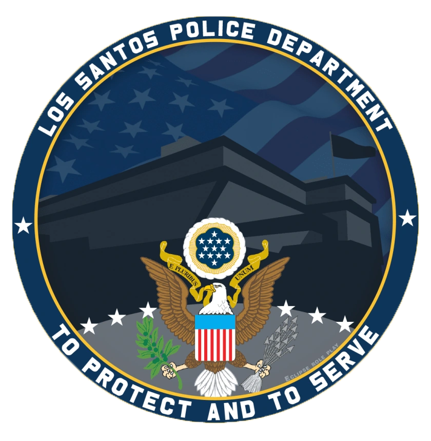
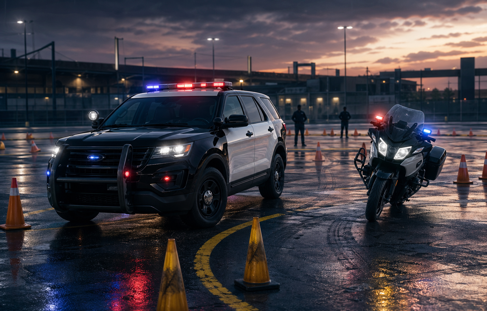
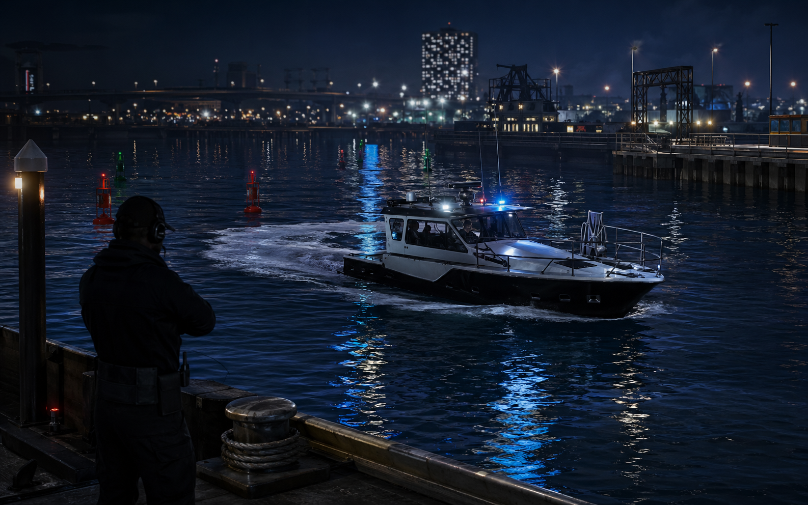

Звание POII
Обязательный критерий для любой специализации. Сотрудник ниже POII не проходит к теории и практике.

Operations Training Specialization ManualAIM HIGH / TRAIN HARD / PATROL SMART
Стандарт допуска, обучения и проверки сотрудников перед использованием специализированной техники.
Admission Standard
Инструктор допускает кандидата только после проверки базовых требований и готовности к ответственному использованию техники.
Обязательный критерий для любой специализации. Сотрудник ниже POII не проходит к теории и практике.
Нет активных взысканий, жалоб за PG/NonRP Driving, самовольного использования техники или нарушения субординации.
Знание устава, радиоэтикета, правил погони, применения силы, безопасной остановки транспорта и работы в парном патруле.
Инструктор может отказать или перенести обучение, если кандидат не готов по поведению, навыкам или активности.
Training Flow
Схема подходит для наземного, воздушного и водного направления. Конкретные упражнения меняются под специализацию.
Кандидат подает запрос инструктору. Проверяются звание POII, дисциплина, активность и базовые знания департамента.
Разбор правил использования техники, зон ответственности, радиообмена, запретов и порядка получения разрешения руководства.
Маршрут, маневры, остановки, взаимодействие с напарником, безопасное завершение ситуации и доклад в рацию.
Тест по правилам и практический сценарий. После успешной сдачи сотрудник получает отметку о квалификации.
Ground Fleet
Список разделен по уровню допуска, чтобы стажеры и квалифицированные сотрудники не путали доступные машины.
Использование только после отдельного разрешения руководства или снятия временного ограничения.
Используется для базового контроля ТС, парковки, маневров и безопасного патруля.
Specialty Careers
Каждое направление получает отдельный допуск, отдельную практику и собственный формат радиообмена.

TG - TANGO / MR - MARY
Подготовка к управлению патрульными, скоростными и мото-юнитами с акцентом на pursuit policy и безопасность города.
NV - NOVA
Квалификация на вертолет Maverick для наблюдения, координации погони и поиска подозреваемых с воздуха.

MK - MIKE
Квалификация на патрульный катер для контроля акватории, поиска, сопровождения и эвакуации на воде.
| Позывной | Назначение | Статус в мануале |
|---|---|---|
| DV - DAVID | Группа S.W.A.T. | Можно вынести в отдельную спецподготовку |
| UN - UNION | K-9 юнит | Функционал дописывается позже |
| MR - MARY | Мото юнит | Входит в наземное направление |
| TG - TANGO | High speed unit | Входит в наземное направление |
Qualification Forms
Готовые формы для инструктора: проверка допуска, теория, практическая часть и итоговое решение. Блоки не используют 10-коды и не отправляют данные наружу.
Certification
Итоговая оценка должна быть понятной кандидату и одинаковой для всех инструкторов.
Этот блок оставлен под будущие правила: выдача ролей, отметки в roster, Discord-права, срок пересдачи, формат заявки и обязанности инструкторов.